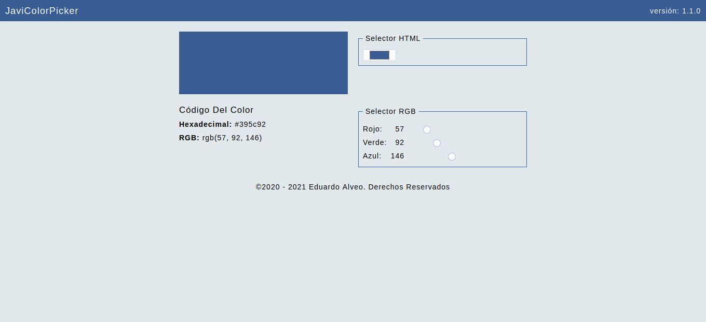

Eduardo J Alveo
Sobre Mí
- Profesión: Almacenista, Maquetador Web y Programador
- Programación: JavaScript, HTML y CSS
- Idioma: Español, Inglés (Básico)
- Religión: Cristiano Católico Romano
- Deporte: Béisbol
- Apasionado Por: El Código Abierto y Linux (GNU/Linux)
Proyectos
Personales
javialveo.github.io

Sitio web personal desarrollado en HTML, CSS y JavaScript.
Visita: javialveo.github.io
Visita el repositorio: GitHub
JaviColorPicker
Sencillo selector de color, desarrollado en HTML, CSS y JavaScript.
Visita: javicolorpicker.netlify.app
Visita el repositorio: GitHub
Herramientas Favoritas
Debian 10
Sistema Operativo de código abierto, desarrollado y mantenido por la comunidad Debian. Se compone del kernel o núcleo Linux y herramientas del sistema operativo GNU, dandole el nombre de Debian GNU/Linux.
Para más información visita: www.debian.org
Escritorio Mate

Entorno de Escritorio de código abierto para los sistemas operativos GNU/Linux y Unix-Like (como FreeBSD). Utiliza la biblioteca GTK+3 y es una bifurcación del proyecto GNOME 2. El proyecto surge por el descontento de la comunidad con el proyecto GNOME 3 y su GNOME-Shell.
Para más información visita: mate-desktop.org
Geany

Es un sencillo IDE de código abierto que cuenta con: un sencillo gestor de proyectos, resaltado de sintaxis, selector de color, soporte para plugins, reconocimiento de lenguajes de programación, lenguajes de script y lenguajes de etiquetas o marcado.
Para más información visita: www.geany.org
Firefox

Navegador web de código abierto, desarrollado y mantenido por Mozilla Fundation y subsidiada por Mozilla Corporation, estád disponible para una variedad de plataformas, cuenta con dos versiones: una versión con soporte extendido o ESR y la versión release.
Para más información visita: www.mozilla.org